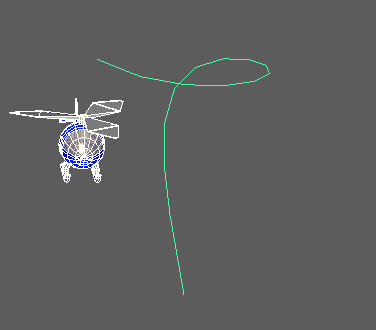
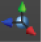
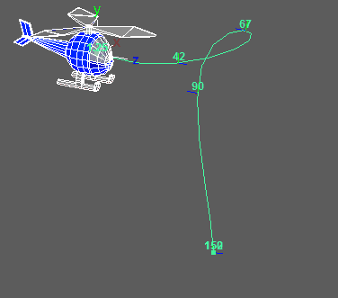

有时，您会希望在对象沿运动路径移动时重新确定其方向。在此示例中，我们需要通过为直升机的飞行角度旋转设置关键帧来对其进行纠正。为此，可以在
“通道盒”(Channel Box)中修改相应的运动路径扭曲值，或者更直观的方法是使用
“显示操纵器工具”(Show Manip Tool)操纵对象。

要调整路径对象的方向，请执行以下操作：
- 选择路径对象。
- 单击“通道盒”(Channel Box)中的 motionPath1 以展开运动路径扭曲值。这是将控制路径动画的节点。
注： 在路径的开始处，该对象的 U 值为 0；在路径的结尾处，其 U 值为 1。
您可以在通道盒中为通道值设置关键帧，或者使用“显示操纵器工具”(Show Manip Tool)手动重新定位对象。
- 从工具栏中选择“显示操纵器工具”(Show Manip Tool)
（或者选择）。
- 使用变换控制柄中心的黄色控制柄沿相应路径移动对象。您还可以在时间滑块中拖动，使动画前进。在本例中，我们将直升机前进到开始俯冲的时刻。
- 重新确定对象方向并通过以下方式之一为 motionPath1 节点的“U 值”(U Value)属性设置关键帧：通过“关键帧”(Keys)菜单；或者单击“通道盒”(Channel Box)中 motionPath1 节点的“U 值”(U Value)属性，然后选择。
或者使用圆上的控制柄可控制路径动画的前方向扭曲属性，即，它绕其前方向轴扭曲的程度。后一个控制柄可用于手动设置对象的倾斜。
- 定位对象，在“通道盒”(Channel Box)的“U 向扭曲”(U Twist)、“前方向扭曲”(Front Twist)、“上方向扭曲”(Up Twist)和“侧方向扭曲”(Side Twist)设置上单击鼠标右键，然后选择“为选定项设置关键帧”(Key Selected)，从而在动画中的该点处在对象的位置上创建关键帧。

提示：
- 启用“自动关键帧”(Auto Key)，可避免在“通道盒”(Channel Box)中为“U 值”(U Value)属性重复设置关键帧。
- 如果要通过操纵器的前方向扭曲控制柄来为对象的倾斜设置动画，也可使用此工作流。
- 您在其中设置关键帧的关键帧编号将显示在路径上。
- 回放动画。您可以通过在曲线图编辑器(Graph Editor)中调整关键帧来调整动画。